|
|
| hard corals text index | photo index |
| Phylum Cnidaria > Class Anthozoa > Subclass Zoantharia/Hexacorallia > Order Scleractinia > Family Agariciidae |
| Ringed
plate coral Pachyseris speciosa* Family Agariciidae updated Nov 2019 Where seen? This plate-like hard coral with rings of concentric ridges is sometimes seen on our undisturbed Southern shores among living corals. 'Pachys' means 'thick' while 'seris' means 'lettuce-like'. It is also known as Serpent coral and Elephant skin coral. Features: Plate-like colonies 10-20cm, sometimes larger on undisturbed reefs, forming tiers of thin plates. The upper surface has ridges that are parallel to the growing edge, thus forming concentric rings. There is a texture of fine lines perpendicular to the ridges. The polyps are usually not visible, and it is hard to distinguish the corallite centres and mouths. Only a thin tissue covers the skeleton. The tissue bears cilia (thin hairs). Colours seen include brown, orangey, blue and green. |
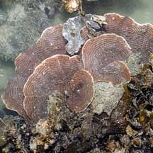 Tiers of plates. Pulau Semakau, Aug 07 |
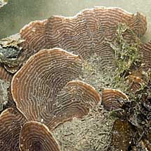 Thick ridges form concentric rings |
.
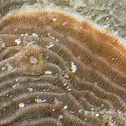 Fine lines perpendicular to thick ridges. |
*Species are difficult to positively identify without close examination.
On this website, they are grouped by external features for convenience of display.
| Ringed plate corals on Singapore shores |
On wildsingapore
flickr
|
| Other sightings on Singapore shores |
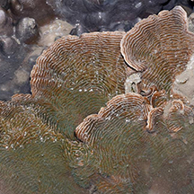 Tanah Merah Ferry Terminal, Jun 15 Photo shared by Loh Kok Sheng on facebook. |
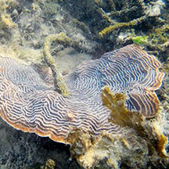 Terumbu Pempang Tengah, Jul 12 Photo shared by Loh Kok Sheng on flickr. |
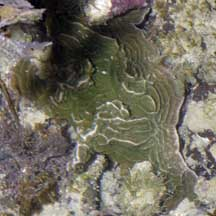 Sisters Island, Aug 07 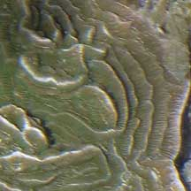 |
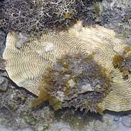 Pulau Berkas, May 10 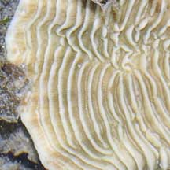 |
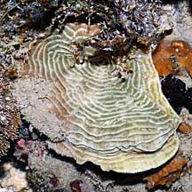 Pulau Hantu, Jun 08 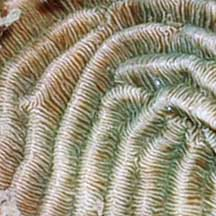 |
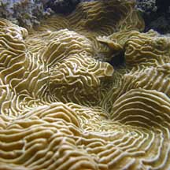 Beting Bemban Besar, May 10 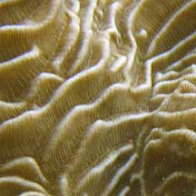 |
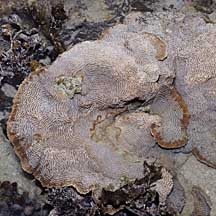 Beting Bemban Besar, Jun 09 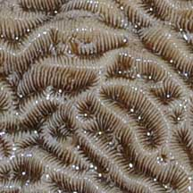 |
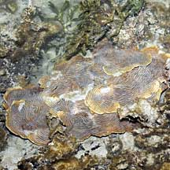 Terumbu Raya, Jul 09 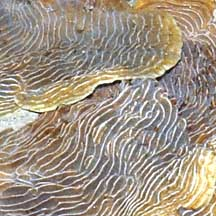 |
|
Links
|